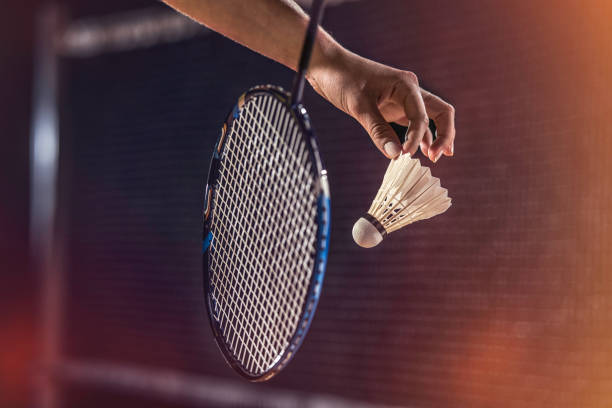
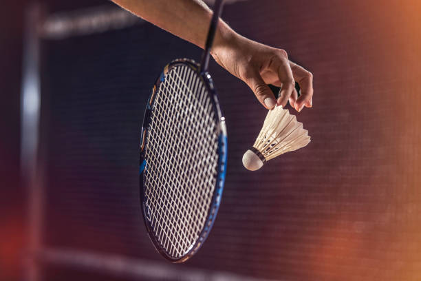

Rackets Asia


 

Badminton has a long history, dating back to ancient civilizations in India and Greece, where a game called "battledore and shuttlecock" was played.
The first badminton association was founded in England in 1893, and the first All England Open Badminton Championships were held in 1899. Over the years, badminton continued to grow in popularity, spreading to countries such as China, Indonesia, and Malaysia, where it became a national sport. In 1992, badminton became an Olympic sport, and today it is played by millions of people around the world at both amateur and professional levels.
Badminton plays by two or four players on a rectangular court divided by a net by using racquets and a shuttlecock.
The playing field for badminton matches is a rectangular space that is either 13.4 meters long and 6.1 meters wide for the singles matches or 13.4 meters long and 8.23 meters wide for doubles matches.
A net that spans the court's middle divides it into two sections. The in-bounds space for the shuttlecock to land during play is designated on the court by boundary lines. A badminton court's flooring is typically constructed of wood with a matte surface.

The main piece of equipment used to play badminton is a badminton racquet. It is a thin and made to make it easier for players to hit the shuttlecock over the net and into the court of their opponent. The handle, shaft, and head are just a few of the parts that make up a basic badminton racket.
The handle that the player holds onto is called the handle, and it is typically lined with rubber. The racket's long, thin component called the shaft links the grip to the head. The component of the racket that makes contact with the shuttlecock is known as the head, and it is normally constructed from a frame and a string bed. The outermost part of the racket head is called the frame, and it is often constructed of thin metals. The strings are tautly strung to produce a hitting surface in the inner edge of the racket head, which is known as the string bed. The sizes of badminton rackets vary. The right racket should fit the player's own playing style and intellectual capacity, and it should also feel comfortable in their hands.
Players cross the net by hitting shuttlecocks, generally referred to as shuttles, in badminton. The base and the feathers, which are its two primary components, are a tiny object with a cone-like shape. Usually, cork is used to make the shuttlecock's base. A player's racket is used to strike this part of the shuttlecock. An extremely thin coating of leather or plastic is placed over the base's other end, which has a cone-like form. Plastic and feathered shuttlecocks are the two primary variants. High-level events use feathered shuttlecocks because of their brand recognition for high accuracy. For casual play, plastic shuttlecocks are a preferred option because they are more cheap and durable.
Two or four players, a badminton court, rackets, and a shuttlecock are required for a game of badminton. A serve is made to the other player or team by one player, who then hits the shuttlecock over the net to begin play. Following that, players alternately hit the shuttlecock back and forth over the net until one player is unable to return it or the shuttlecock lands beyond the court's bounds. When the shuttlecock landed on the opposing team's court or if the opposing team is unable to retrieve the shuttlecock, a point is awarded. The first person or team to reach 21 points, with a two-point advantage, wins.